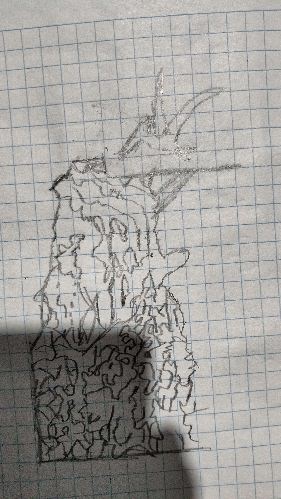
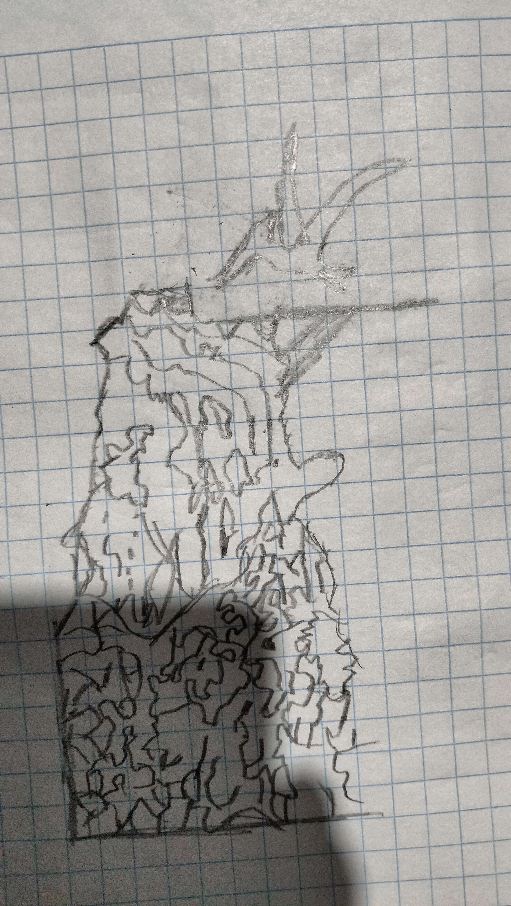

Lore
Ark-Pocalips es un juego que nos lleva a una isla en medio del océano pacífico, donde se encuentra un ecosistema que se creía extinto.
Con el único problema de que la isla está en constantes cambios, que llevarán a las criaturas a adaptarse a estos fenómenos y también a sobrevivir a las demás criaturas que las querrán comer.
Cómo se juega
Primero tendrás que elegir uno de los 4 tipos de dinosaurios que existen:
Tipos de dinosaurios
- Volador: estos dinos tienden a volar y atrapar con sus alas a los dinos enemigos para darles desventajas como esquivar peligros.
- Carnívoro: estos dinos son capaces de morder a los dinos enemigos causándoles daño.
- Herbívoro: son grandes y fuertes, pueden empujar a los demás dinos y curarse comiendo plantas.
- Acuático: gracias a un remolino que los lleva por la isla son capaces de moverse y, si lo requiere, pueden esconderse debajo del agua.
La isla
En la isla encontrarán muchos peligros, recursos y lo necesario para evolucionar. Ya que la isla está en constante cambio, será vital que los dinosaurios sean capaces de adaptarse a su entorno.
Casillas
Habrá distintas casillas en la isla las cuales otorgarán distintas ventajas y desventajas:
- Casilla de inicio: aquí empezarán los dinos.
- Casilla de herramienta: aquí los dinos encontrarán herramientas que los ayudarán en su travesía, desde una roca en llamas hasta un muslo de carne.
- Casilla de dinohuevo: en esta se encontrará un huevo que les dará una vida extra o la posibilidad de evolucionar.
- Casilla de evento canónico: esta casilla provocará que en alguna parte de la isla sufra alguna catástrofe que cambiará su ambiente de manera drástica.
Imágenes del prototipo del juego
Aquí tenemos el primer prototipo funcional, el cual solo puede hacer que se mueva el personaje hacia adelante en base a unos dados.

Arte conceptual
Aquí tenemos las imágenes de las torres de los dinos donde estarán durante toda la partida:

 


Comentario
En futuras versiones de la página agregaremos más referencias y datos curiosos de los arkeanos. Primero queremos desarrollar un juego base para crear una verdadera experiencia de juego para los arkenos y su comunidad tan bella.
Redes sociales
Link del canal de YouTube de NexxuzWorld:

Discord del proyecto: